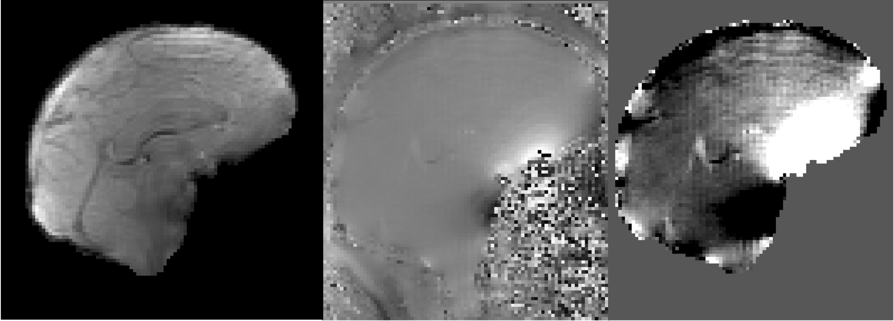
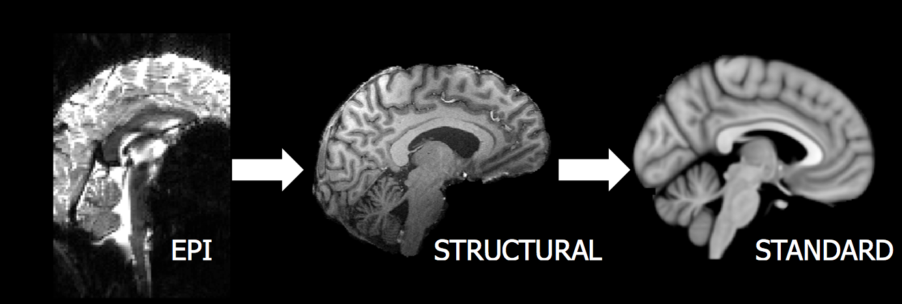
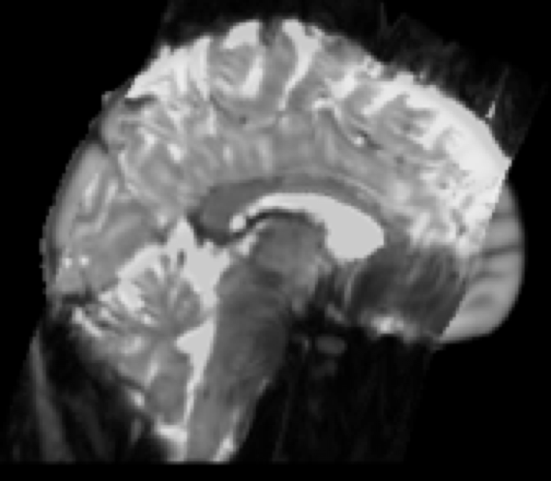
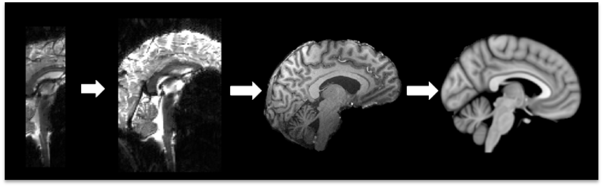
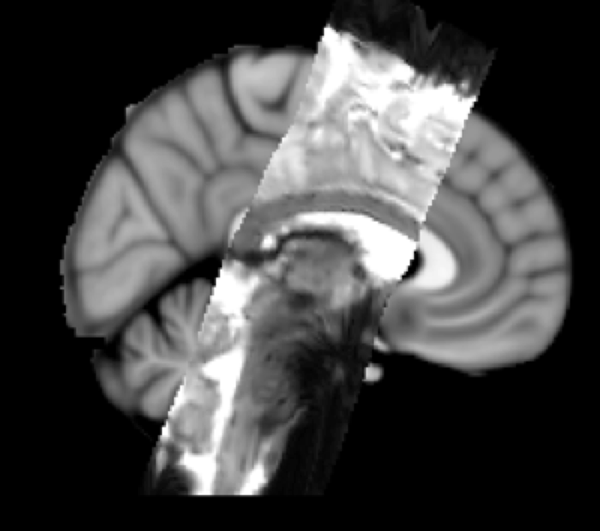

Step-by-Step Guide
Registration
Run brain extraction on the structural image
Structural Registration
- Subject T1 images may need to be registered to either a standard brain or a study template
Registration for structural analysis is within VBM, FreeSurfer and FIRST pathways
Stand-alone registration can be conducted using first linear (FLIRT) followed by non-linear (FNIRT) registration
- First use the FLIRT GUI or terminal command (flirt) with affine registration from structural to standard
- Use the fnirt command line tool, specifying the affine matrix (--aff) and the configuration file (--config=T1_2_MNI152_2mm usually)
Check outputs: Load registration output over the standard brain or study template in FSLView
Diffusion Registration
Usually conducted within the Registration tab of the FDT GUI. Must be run after bedpostx.
- Registration from diffusion space to standard space is a two-step process, using a mid-point reference of a structural T1 image and concatenating the two steps to minimize resampling
Step 1: Brain-extracted B0 images (nodif_brain) are transformed into structural space.
- Step 2: Same as structural registration – FLIRT + FNIRT from structural to standard
- Check outputs: Check each step of the registration pathway separately as well as the total output, using FSLView to overlay the diffusion image resampled into structural space, and the structural image resampled into standard space
FMRI Registration
- Create fieldmaps (if using):
Run brain extraction on the fieldmap magnitude image
- Recommended: erode the brain-extracted magnitude image once (fslmaths –ero) for a tight mask
- Create fieldmap using Fsl_prepare_fieldmap GUI (or fsl_prepare_fieldmap) in the command line

Magnitude Image (after BET) + Phase Image = Fieldmap
Registration can be conducted within the FEAT GUI
- B0 unwarping using fieldmaps is conducted prior to registration in the Preprocessing tab of the FEAT GUI
- Registration from functional space to standard space is a two-step process, using a mid-point reference of a structural T1 image and concatenating the two steps to minimize resampling

Example result: Two-stage registration
EPI (functional) to T1 Structural to Standard Space
- Step 1: boundary based registration (BBR) recommended from functional image to structural
- Command line tool is epi_reg (fieldmap distortion-correction can be included in this for stand-alone registrations)
- Step 2: Same as structural registration – FLIRT + FNIRT from structural to standard
- Check outputs: Check each step of the registration pathway separately as well as the total output, using FSLView to overlay the functional image resampled into structural space, and the structural image resampled into standard space

Example result: EPI (functional) resampled to standard space
Partial FOV FMRI Registration
- Partial field of view functional images: An additional step is inserted prior to step 1. A whole-brain functional scan with identical parameters (resolution and slice orientation) to the partial FOV needs to be acquired, and a limited (3 degrees of freedom) FLIRT registration is conducted from the partial FOV to whole-brain functional image.

Example result: Three-stage registration
Partial FOV EPI to Whole-brain EPI to T1 Structural to Standard Space

Example result: Partial FOV EPI (functional) resampled to standard space